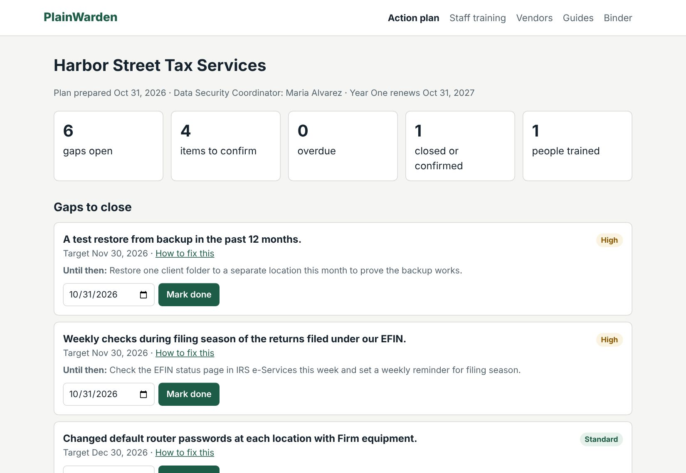

Sample security plan
This is a real PlainWarden plan, generated by the same software customers use, for a fictional small tax practice (two to five people). Every firm's plan is different: it reflects your own answers.
Download the sample PDFStart your plan
What to notice
- Honest status. Safeguards the firm reported are marked as reported in place. Gaps say so plainly, with a priority, a target date and a temporary measure.
- Items to confirm. Where the firm wasn't sure, the plan lists what to check and by when, instead of guessing.
- Ready to adopt. Sections follow IRS Publication 5708, with attachments for retention, rules of behavior, incident response, staff acknowledgment, device inventory and a draft risk assessment.
Year One tracker
With Year One, the action plan becomes a tracker with due-date reminders, staff training records, a vendor list and an audit binder.

The sample plan
Harbor Street Tax Services and everyone named in it are fictional. Shown as generated; signature lines are left blank.
Written Information Security Plan
Harbor Street Tax Services
Prepared October 31, 2026 · Draft for adoption until signed · Review by October 31, 2027
Data Security Coordinator: Maria Alvarez
This plan describes how Harbor Street Tax Services protects the personal and financial information of its clients and employees, based on the answers the Firm gave on October 31, 2026. It records the Firm's reported information security practices and identifies actions for its consideration. Where the Firm reported a safeguard in place, the plan says so; where one is not in place or not confirmed, the plan says that too and suggests a target date. Completing or adopting this document does not establish that the Firm complies with all applicable laws or regulatory requirements. The Firm remains responsible for implementing, evaluating and maintaining an appropriate information security program.
- This plan addresses the FTC Safeguards Rule requirements that apply to firms with 5,000 or more consumers, and it lists the implementation and verification work still outstanding. (16 CFR 314)
Do these first:
- A test restore from backup in the past 12 months.
- Weekly checks during filing season of the returns filed under our EFIN.
- Security training for the Coordinator in the past year.
- Changed default router passwords at each location with Firm equipment.
- A separate guest network that keeps visitors off the Firm's network.
To adopt this plan: 1) Review it and correct anything that isn't accurate. 2) Sign Section VII. 3) Share it with everyone who handles client data and collect signed acknowledgments (Attachment D). 4) Complete the items marked "to complete": Attachment E: location, user and serial number for each device; Attachment F: people with access; Attachment D: a signed acknowledgment from each person. 5) Work through the action plan, starting with critical items.
I. Objective
Harbor Street Tax Services ("the Firm") adopts this Written Information Security Plan to protect the customer information it collects, stores, uses and shares. As a provider of tax preparation and related services, the Firm is a financial institution under the Gramm-Leach-Bliley Act and must maintain an information security program under the FTC Standards for Safeguarding Customer Information (16 CFR Part 314). This plan follows the structure of IRS Publication 5708, adapted to the Firm.
Client information in this plan means any record, paper or electronic, with nonpublic personal information about a client, spouse, dependent or employee, such as Social Security or taxpayer ID numbers, dates of birth, income and tax data, bank or card account numbers, or government ID numbers.
II. Purpose
This plan exists to keep client information confidential and secure, protect it against threats we can reasonably foresee, and prevent unauthorized access or use that could harm our clients.
III. Scope
This plan applies to everyone who works for or on behalf of the Firm, including owners, employees, seasonal staff and contractors, and to every device, account, system, service provider and paper file that holds client information.
The Firm has two to five people working from a dedicated office and a home office in California. Client information is kept in Drake Tax, Microsoft 365 email, Microsoft OneDrive, a client portal (SmartVault) and office computers.
Firm policy: we base this plan on an assessment of the reasonably foreseeable risks to client information and whether our safeguards control them. We repeat it at least once a year and whenever our operations change significantly. (16 CFR 314.4(b))
Firm policy: our assessment is written (Attachment G) and records how we rate risks, how we judge our safeguards, and how each risk will be reduced or accepted. (16 CFR 314.4(b)(1))
Attachment G was drafted from our questionnaire answers. It becomes our assessment only after Maria Alvarez reviews the risks, ratings and decisions and signs it.
IV. Responsible Officials
- The Firm designates Maria Alvarez, Owner, as its Data Security Coordinator and Qualified Individual under 16 CFR 314.4(a).
- Firm policy: the Coordinator oversees, implements and enforces this plan, which includes keeping it and its attachments current, reviewing it at least once a year and after significant changes, making sure everyone with access is trained and has signed Attachment D, keeping Attachments E and F current, overseeing service providers, and leading the response to any security incident. (16 CFR 314.4(a))
- After a security incident, Maria Alvarez speaks for the Firm to clients, the media and the public. Reports to law enforcement and regulators are coordinated by the Coordinator.
- If the Coordinator is unavailable, this person acts in that role: Daniel Cho, 555-555-0143.
- At least once a year, the Coordinator reports in writing to Maria Alvarez, Owner, on the overall status of this program and material matters: risk assessment, risk management and control decisions, service provider arrangements, test results, security events and our response, and recommended changes. (16 CFR 314.4(i))
- GAP Not currently in place: security training for the Coordinator in the past year. Interim measure: Complete a security course or arrange outside expert support. IRS Publication 4557 is a free starting point. (Priority: Standard. Owner: Maria Alvarez. Target: December 30, 2026.) (16 CFR 314.4(e)(2)–(4))
V. Inside the Firm
- Firm policy: we collect only the client information we need to provide our services or meet legal requirements, and limit access to the people listed in Attachment F. (16 CFR 314.4(c)(1))
- We keep returns we prepared (or a list of them) for 7 years, counted from the end of the return period in which each return was signed. (16 CFR 314.4(c)(6))
- We keep source documents and workpapers for 7 years, counted from the date the return was filed. (16 CFR 314.4(c)(6))
- We keep records of former clients for 7 years, counted from the last date we served them. (16 CFR 314.4(c)(6))
- Firm policy: we dispose of a former client's information no later than two years after we last used it to serve them, unless we need it for a legitimate business purpose, the law requires us to keep it, or targeted disposal isn't reasonably feasible. We never destroy a record that is under a hold: anything related to an IRS examination, a dispute, a lawsuit or an investigation we know about or reasonably expect. The Coordinator places and lifts holds in writing. We review this schedule at least once a year. (16 CFR 314.4(c)(6))
- Paper with client information is destroyed by a shredding service. (16 CFR 314.4(c)(6))
- Computers, phones and drives are securely wiped or destroyed by our IT provider before reuse or disposal. (16 CFR 314.4(c)(6))
- Firm policy: everyone must receive this plan, complete security training before getting access to client information, and sign Attachment D. (16 CFR 314.4(e))
- Signed acknowledgments are on file.
- We check references before granting access to client information. (IRS Publication 5708)
- Access is removed on a person's last day. (16 CFR 314.4(c)(1))
- Firm policy: we share client information only to provide our services, as the law requires or permits, or with the client's consent. Federal law (IRC §7216 and Treas. Reg. 301.7216) restricts how tax return preparers use and disclose tax return information. Some uses are allowed without consent under IRS exceptions; others require the client's signed consent, in the form the IRS requires, before we use or disclose the information. Before starting any use other than preparing returns, the Coordinator confirms with the Firm's adviser which rule applies. (IRC §7216)
- We use tax return information only to prepare returns and as the law requires. (IRC §7216)
- Separate from this plan, the GLBA Privacy Rule may require the Firm to give clients a privacy notice. Confirm with your professional advisor.
VI. Outside the Firm
Technical safeguards
- TO CONFIRM Not yet confirmed: whether two-step login is on for the client portal. Maria Alvarez will verify by November 30, 2026. (16 CFR 314.4(c)(5))
- TO CONFIRM Not yet confirmed: whether two-step login is on for remote access. Maria Alvarez will verify by November 30, 2026. (16 CFR 314.4(c)(5))
- Two-step login is required for email, our tax software, cloud storage, bookkeeping software and the password manager. (16 CFR 314.4(c)(5))
- Everyone uses their own login; we don't share accounts. (16 CFR 314.4(c)(1))
- TO CONFIRM Not yet confirmed: whether client data on phones and tablets is encrypted. Maria Alvarez will verify by November 30, 2026. (16 CFR 314.4(c)(3))
- Client data on our desktop computers, laptops, servers and NAS devices, USB and external drives and backups is encrypted. (16 CFR 314.4(c)(3))
- Our secure portal protects documents in transit. (16 CFR 314.4(c)(3))
- Documents we exchange in person are physical records, protected as described in Section V.
- Every computer runs current anti-malware software. (IRS Publication 4557)
- Operating systems and software update automatically. (IRS Publication 4557)
- We back up client data using a cloud backup service. (IRS Publication 4557)
- Backups are encrypted.
- GAP Not currently in place: a test restore from backup in the past 12 months. Interim measure: Restore one client folder to a separate location this month to prove the backup works. (Priority: High. Owner: Maria Alvarez. Target: November 30, 2026.) (IRS Publication 4557)
- Every password is unique to one account. (NIST SP 800-63B-4)
- We don't force routine password changes. We change a password right away when there is evidence it has been compromised, and follow any stricter rule a specific system requires. This follows NIST SP 800-63B-4.
- GAP Not currently in place: changed default router passwords at each location with Firm equipment. (Priority: Standard. Owner: Maria Alvarez. Target: December 30, 2026.) (IRS Publication 4557)
- GAP Not currently in place: a separate guest network that keeps visitors off the Firm's network. Interim measure: Don't share the Firm's Wi-Fi password with visitors. (Priority: Standard. Owner: Maria Alvarez. Target: December 30, 2026.) (IRS Publication 4557)
- GAP Not currently in place: changed default passwords on our printers and copiers or scanners. (Priority: Standard. Owner: Maria Alvarez. Target: December 30, 2026.) (IRS Publication 4557)
- Our printers and copiers or scanners receive firmware updates. (IRS Publication 4557)
- Client data is handled only on Firm devices. (IRS Publication 5708)
- Everyday work is done without administrator rights. (16 CFR 314.4(c)(1))
- We review who has access to client data at least once a year. (16 CFR 314.4(c)(1))
Training, service providers, AI tools and monitoring
- Everyone with access completes security training when they start and at least once a year. (16 CFR 314.4(e)(1))
- These service providers can access or store client information: Drake Tax (tax software), Microsoft 365 (email), Microsoft OneDrive (storage or client portal), SmartVault (storage or client portal), a backup service, an IT provider and a shredding service. Company names given: Bayside IT. (16 CFR 314.4(f))
- TO CONFIRM Not yet confirmed: whether our agreement with our shredding or off-site storage provider requires it to protect client information. Maria Alvarez will verify by November 30, 2026. (16 CFR 314.4(f)(2))
- Our agreements with our tax software provider, email provider, storage or client portal provider, backup service and IT provider require them to protect client information. (16 CFR 314.4(f)(2))
- Firm policy: before selecting a provider that will handle client information, the Coordinator checks that it can protect it (security terms, two-step login, where it stores data, and that it will tell us about a breach) and records the result in the vendor list. (16 CFR 314.4(f)(1))
- We check each new provider's security before we start using it. (16 CFR 314.4(f)(1))
- Firm policy: we review providers based on the risk they present, starting with those that store client information or manage our systems. (16 CFR 314.4(f)(3))
- At least once a year we review each provider's security. (16 CFR 314.4(f)(3))
- Firm policy: before anyone uses an AI tool with client information, the Coordinator reviews what the provider does with the data (use, retention, who can access it, subcontractors and security terms) and whether the use is permitted under the tax-return disclosure rules in Section V. Approved tools are added to the vendor list.
- We do not enter client information into AI tools.
- Email, our tax software, cloud storage and the client portal keep a record of who signed in and what they accessed. (16 CFR 314.4(c)(8))
- Email, our tax software, cloud storage and the client portal alert us to unusual sign-ins, bulk downloads and permission or setting changes. (16 CFR 314.4(c)(8))
- Alerts and activity records are reviewed whenever an alert arrives by Admins. (16 CFR 314.4(c)(8))
- GAP Not currently in place: weekly checks during filing season of the returns filed under our EFIN. Interim measure: Check the EFIN status page in IRS e-Services this week and set a weekly reminder for filing season. (Priority: High. Owner: Maria Alvarez. Target: November 30, 2026.) (IRS data theft guidance)
- Bayside IT provides continuous monitoring of our systems that hold client information. Most recent provider report reviewed: October 1, 2026. (16 CFR 314.4(d)(2))
- Firm policy: we run a vulnerability assessment after any material change to our operations or systems. (16 CFR 314.4(d)(2))
- Firm policy: before adding a system, software or provider that will handle client information, the Coordinator confirms it meets this plan and updates Attachments E and F. (16 CFR 314.4(c)(7))
Incident readiness
- GAP Not currently in place: a yearly walkthrough of this breach checklist. (Priority: Standard. Owner: Maria Alvarez. Target: December 30, 2026.) (16 CFR 314.4(h))
Action Plan
Gaps: not currently in place
| Item | Priority | Interim measure | Owner | Target | Done on |
|---|---|---|---|---|---|
| A test restore from backup in the past 12 months. | High | Restore one client folder to a separate location this month to prove the backup works. | Maria Alvarez | November 30, 2026 | ________ |
| Weekly checks during filing season of the returns filed under our EFIN. | High | Check the EFIN status page in IRS e-Services this week and set a weekly reminder for filing season. | Maria Alvarez | November 30, 2026 | ________ |
| Security training for the Coordinator in the past year. | Standard | Complete a security course or arrange outside expert support. IRS Publication 4557 is a free starting point. | Maria Alvarez | December 30, 2026 | ________ |
| Changed default router passwords at each location with Firm equipment. | Standard | — | Maria Alvarez | December 30, 2026 | ________ |
| A separate guest network that keeps visitors off the Firm's network. | Standard | Don't share the Firm's Wi-Fi password with visitors. | Maria Alvarez | December 30, 2026 | ________ |
| Changed default passwords on our printers and copiers or scanners. | Standard | — | Maria Alvarez | December 30, 2026 | ________ |
| A yearly walkthrough of this breach checklist. | Standard | — | Maria Alvarez | December 30, 2026 | ________ |
A target date is when we plan to close the gap. It is a planning target we set for ourselves, not a deadline or grace period under any regulation. Until the gap is closed, it exists and the interim measure applies.
To confirm
| Item | Who verifies | By | Result: In place / Gap |
|---|---|---|---|
| Whether two-step login is on for the client portal. | Maria Alvarez | November 30, 2026 | ________ |
| Whether two-step login is on for remote access. | Maria Alvarez | November 30, 2026 | ________ |
| Whether client data on phones and tablets is encrypted. | Maria Alvarez | November 30, 2026 | ________ |
| Whether our agreement with our shredding or off-site storage provider requires it to protect client information. | Maria Alvarez | November 30, 2026 | ________ |
VII. Implementation
This plan takes effect on the date it is signed. The Firm will close each gap and confirm each open item by its date, and record the result. The Coordinator reviews this plan at least once a year, before October 31, 2027, and sooner if the Firm adds staff, changes systems or providers, moves, or has a security incident. (16 CFR 314.4(g))
Adopted on: __________________
Signed: ______________________________
Maria Alvarez, Owner
Attachment A: Record Retention and Disposal
Pre-filled from your answers.
| Record | We keep it for | Then |
|---|---|---|
| Returns we prepared, or a list of clients and returns | 7 years, counted from the end of the return period in which each return was signed, and never less than the federal minimum below | Shredding service / secure deletion |
| Source documents and workpapers | 7 years, counted from the date the return was filed | Shredding service / secure deletion |
| Records of former clients | 7 years, counted from the last date we served them | Shredding service / secure deletion |
| Old computers, phones and drives | Until replaced | Securely wiped or destroyed by our IT provider; logged in Attachment E |
Federal minimum for returns: IRC §6107 requires a preparer to keep a copy of each return, or a list showing each taxpayer's name, taxpayer ID, tax year and type of return, for 3 years after the close of the return period in which the return was presented for signature. A return period runs July 1 through June 30 (IRC §6060(c)). Example: a return signed in March 2026 falls in the period ending June 30, 2026, so it is kept until at least June 30, 2029.
Holds and longer periods: We keep any record related to an IRS examination, a dispute, a lawsuit or an investigation we know about or reasonably expect, even after its period ends, until the Coordinator lifts the hold in writing. Where another law requires a longer period, that period applies; other federal and state recordkeeping rules may require longer retention for specific records, and the Coordinator confirms these with our adviser. The disposal rule in Section V applies to everything else.
Why some records are kept longer than two years: preparer record rules (IRC §6107), the periods during which the IRS can examine a return, and professional liability. The Coordinator confirms these reasons at each annual review.
Attachment B: Rules of Behavior
Everyone with access signs these with Attachment D.
- Send client information only through our secure portal. Never by regular email or text.
- Lock your screen when you step away. Lock up paper files at the end of the day.
- Use your own login and a unique password for every account. Use two-step login on every system that holds client information; if a system can't support it, tell the Coordinator before using it.
- Treat unexpected links, attachments and urgent requests for information or payment as suspicious. Verify by phone using a number you already have.
- Don't install software or connect USB drives the Coordinator hasn't approved.
- Don't enter client information into any AI tool the Coordinator hasn't approved.
- Report lost devices, suspicious emails or anything unusual to Maria Alvarez right away. Reporting a mistake quickly is always the right call.
Attachment C: Incident Response and Breach Notification
Print this attachment and keep a copy where you can reach it if your computers are down.
Treat any of these as a possible incident
A lost or stolen device; a phishing email someone clicked or answered; unexpected password resets or sign-ins; more returns filed under our EFIN than we prepared; clients receiving IRS notices about returns they didn't file; files locked by ransomware.
Immediately
- Contain it, keep the evidence. Disconnect affected devices from the network; don't wipe, reinstall or switch them off. From a clean device, change passwords for affected accounts. Take prompt, proportionate steps to contain an active incident while preserving evidence, and coordinate with our incident-response advisers, counsel, service providers and insurer as appropriate. Necessary emergency containment is not unreasonably delayed.
- Call the Coordinator: Maria Alvarez, (555) 555-0142. If unreachable: Daniel Cho, 555-555-0143. If neither can be reached within an hour, Maria Alvarez acts as Coordinator.
- Report to the IRS through our local IRS Stakeholder Liaison (name and phone: ______________________). Speed matters: the IRS can block fraudulent returns filed with stolen data. IRS toll-free lines can't take these reports.
- Call our first-call adviser: Coastline Legal. Phone: ______________________
- Start the incident log: what happened, when and by whom it was discovered, and every action taken.
Within days
- State tax agencies: report to each state where we prepare state returns, using the Federation of Tax Administrators' current state contact list (taxadmin.org, "Report a Data Breach").
- Law enforcement: contact the local FBI field office and file a police report; contact the Secret Service if directed.
- Security expert: have a professional find the cause and scope, stop the breach and fix weaknesses before resuming normal work.
- Credit bureaus: notify Equifax, Experian and TransUnion.
Notices to regulators and affected people
State breach-notice obligations often depend on where the affected people live, not only where we work, and states differ in what triggers notice, who must be told and by when. Our clients live in: California and Nevada. With our adviser, we determine for each state whether we must notify the attorney general or another regulator, notify affected people (by individual letter), or offer credit monitoring, and by when. We coordinate the timing with law enforcement, but a law-enforcement request delays a deadline only where the applicable law allows it. Affected clients should file IRS Form 14039 only if they receive an IRS notice or their e-filed return is rejected for a duplicate SSN.
FTC notice (all firm sizes)
We must notify the FTC when a notification event affects 500 or more consumers. A notification event is the acquisition of unencrypted customer information without the individual's authorization. Encrypted information counts as unencrypted if the encryption key was also accessed. Unauthorized access to unencrypted customer information is presumed to be acquisition unless we have reliable evidence that it wasn't, or couldn't reasonably have been.
We file through the FTC's online form as soon as possible and no later than 30 days after discovery. An event is discovered on the first day it is known to anyone at the Firm, including any employee, officer or agent, other than the person who committed it. The report includes our name and contact information, the types of information involved, the date or date range, the number of consumers affected, a general description, and whether law enforcement has asked in writing for a delay. (16 CFR 314.2(m), 314.4(j))
Recover
Restore systems from known-good backups; reset credentials; ask the IRS whether our EFIN should be deactivated and reissued, and watch EFIN filing counts closely; confirm with the security expert that the cause is fixed before resuming normal work.
After the incident
The Coordinator records what happened and what we learned, fixes the weaknesses found, and updates this plan. (16 CFR 314.4(g))
Written incident response plan
This attachment is our written incident response plan under 16 CFR 314.4(h). Goals: contain the incident, protect clients, restore operations and meet notice duties. Roles and decision authority: the Coordinator directs the response; Maria Alvarez approves outside spending and public statements. Internal processes, communications, remediation, documentation and post-incident review are set out above.
Attachment D: Acknowledgment
To complete.
I have received and read the Harbor Street Tax Services Written Information Security Plan and Rules of Behavior, completed security training on __________, and agree to follow them.
| Name | Signature | Date |
|---|---|---|
Attachment E: Device Inventory
Partly pre-filled. Location, user and serial number are to complete.
| Device type | Count | Encryption | Location | User | Serial |
|---|---|---|---|---|---|
| Desktop computers | 5 | In place | |||
| Laptops | 50 | In place | |||
| Phones or tablets | 50 | Unconfirmed | |||
| Servers or NAS | 5 | In place | |||
| Printers | to complete | N/A | |||
| Copiers or scanners | to complete | N/A |
Attachment F: People with Access
To complete. We don't collect staff names, so this list is blank by design.
| Name | Role | Systems | Access granted | Access removed |
|---|---|---|---|---|
Attachment G: Risk Assessment (draft)
Draft prepared from questionnaire answers. Not adopted until the Coordinator reviews and signs it. It is based on information the Firm supplied, not an independent verification of the Firm's systems. A written risk assessment is required for this Firm (16 CFR 314.4(b)(1)).
Every rating below is a suggestion drawn from your answers. Confirm or change each one.
| Risk and affected systems | Likelihood / impact (suggested) | Basis: related safeguards | Remaining risk (suggested) | Suggested next action | Decision, owner, approval |
|---|---|---|---|---|---|
| Stolen credentials Email, tax software and cloud accounts | Medium / High | Reported in place: two-step login, unique passwords and activity records and alerts. To confirm: two-step login. | Medium | Confirm whether two-step login is on for the client portal. | Decision: ______ Owner: ______ Approved: ______ |
| Phishing Email and everyone with access | Medium / High | Reported in place: security training, two-step login and anti-malware. To confirm: two-step login. | Medium | Confirm whether two-step login is on for the client portal. | Decision: ______ Owner: ______ Approved: ______ |
| Lost or stolen device Laptops, phones and drives | Medium / Medium | Reported in place: encryption, device use rules and device disposal. To confirm: encryption. | Medium | Confirm whether client data on phones and tablets is encrypted. | Decision: ______ Owner: ______ Approved: ______ |
| Ransomware Drake Tax, Microsoft 365 email, Microsoft OneDrive and a client portal (SmartVault) | Medium / High | Reported in place: backups, automatic updates and anti-malware. Gaps: backups. | Medium | Close gap: a test restore from backup in the past 12 months. | Decision: ______ Owner: ______ Approved: ______ |
| Vendor breach Drake Tax, Microsoft 365 and Microsoft OneDrive | Medium / High | Reported in place: vendor contracts, vendor vetting and vendor reviews. To confirm: vendor contracts. | Medium | Confirm whether our agreement with our shredding or off-site storage provider requires it to protect client information. | Decision: ______ Owner: ______ Approved: ______ |
| Insider misuse Client files and tax software | Low / Medium | Reported in place: individual logins, access reviews, offboarding and activity records and alerts. | Low | Keep current safeguards; review at the annual review. | Decision: ______ Owner: ______ Approved: ______ |
| Paper exposure Paper (little or none kept) | Low / Low | Reported in place: paper disposal. | Low | Keep current safeguards; review at the annual review. | Decision: ______ Owner: ______ Approved: ______ |
| Misuse of AI tools AI tools in use; answers say no client data is entered | Low / Medium | Reported in place: AI tool rules. | Low | Keep current safeguards; review at the annual review. | Decision: ______ Owner: ______ Approved: ______ |
Likelihood: Low = unlikely in the next year; Medium = could happen in the next year; High = likely in the next year. Impact: Low = minor harm, no client data exposed; Medium = data of some clients exposed or a few days of disruption; High = data of many clients exposed or the Firm unable to operate. Decisions: reduce (add or fix safeguards), accept (record why), or transfer (for example insurance or a provider contract; the Firm still owns the duty to protect client information and any remaining risk). Suggested ratings are not our assessment until the Coordinator confirms or changes each one and signs. Reviewed at least yearly. (16 CFR 314.4(b))
Coordinator signature: ______________________ Date: __________
Prepared with PlainWarden from information provided by Harbor Street Tax Services on October 31, 2026. PlainWarden is documentation software. It is not legal advice, an independent security assessment or a compliance certification. Statements marked as reported in place reflect the Firm's answers and were not independently verified.
General guidance for small tax and accounting firms, last reviewed October 30, 2026. It is not legal advice and does not certify compliance. Product menus change; check your provider's help pages for exact steps.